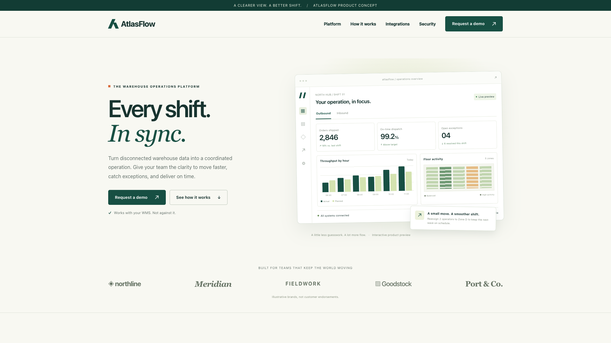
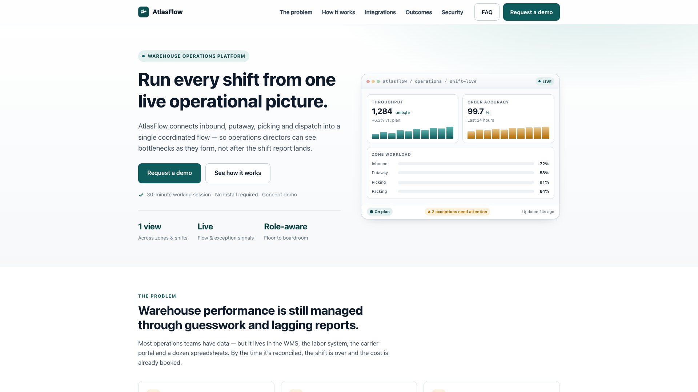
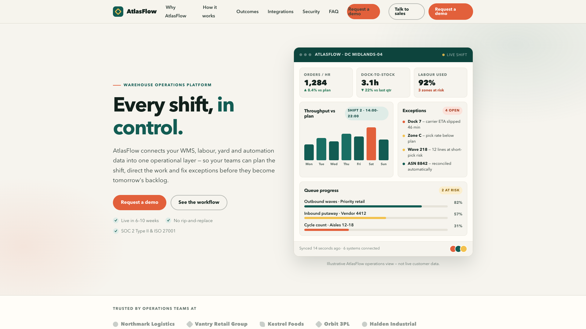
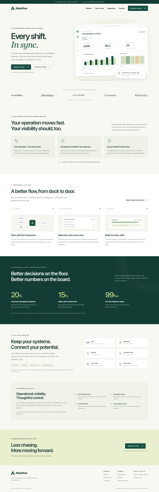
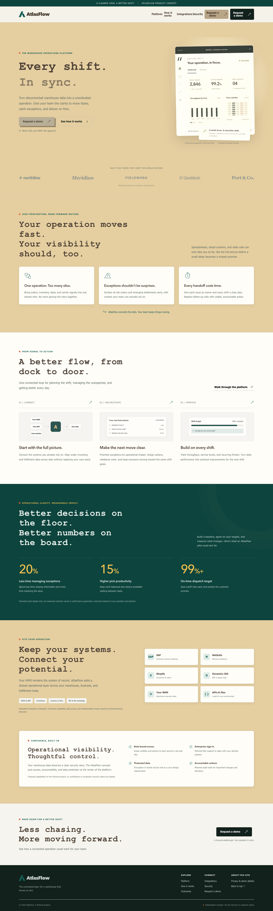

← 返回五案例
依次查看三个模型的独立答案、候选问题、修改前后页面和缺点总结。设计优劣尚待真实人工验证。
同一题目由 GPT、DeepSeek、Xiaomi MiMo 独立生成。以下为同一视口的 1920 × 1080 首屏。



GPT 基于现有截图和页面证据提出 5 项候选问题，不设条数上限。新版 After 基于其中可对应且能安全实现的 4 项生成；每条的处理状态见下方。问题尚未经过人工确认。
工作负载图显示了不同百分比，却没有可辨识的对应比例填充，削弱了用图形快速比较各作业区负载的作用。
首屏右侧 Zone workload 面板中，72%、58%、91%、64% 四个数值对应的条形均呈相同长度的浅灰轨道，未见不同长度的数值填充。此问题依据稳定后的截图，而非推测动画或脚本原因。
处理：把图表中原本高低不同的柱形统一为 58% 高度，降低图形比较的辨识度。
桌面页头同时显示两个相同目标、相同文案的演示 CTA，形成重复视觉强调并占用导航空间。
截图顶部 FAQ 后方和最右侧各有一枚橙色 Request a demo。HTML 中，li.mobile-cta 内的链接和 div.nav-cta 内的主链接均为 href="#demo"，且文案相同。GPT 截图的页头仅显示一个演示 CTA。
处理：在桌面页头增加第二个同文案、同动作的演示按钮；新增按钮仍可打开原有演示交互。
当前桌面页头的导航与操作标签被挤成多处双行，降低了横向扫描的紧凑性；列表内演示按钮的文字还紧贴左边缘。
1920 × 1080 截图顶部，Why AtlasFlow、How it works、Talk to sales 以及两枚 Request a demo 均分为两行；FAQ 右侧第一枚橙色按钮的文字几乎贴着左侧轮廓。相比之下，GPT 与 DeepSeek 的可见桌面导航标签均为单行。这不是对其他视口表现的判断。
处理：压缩导航间距并限制部分标签宽度，使桌面导航出现不一致的换行。
页头两枚同文案、同目标的主按钮使用不同文字颜色，使同类主要操作的视觉规则不一致。
截图顶部 FAQ 后的橙色 Request a demo 使用深色文字，最右侧橙色 Request a demo 使用白色文字。HTML 中两者分别使用 btn btn--primary，且都指向 #demo；英雄区同类橙色主按钮也使用白色文字。这里仅指出一致性问题，不推断其对比度是否达标。
处理：为两枚同类演示按钮设置不同的底色与文字颜色。
异常面板将已自动处理的条目计入“4 OPEN”的可见列表，却没有解释开放项与已解决项的区别，使汇总状态难以与明细核对。
首屏右侧 Exceptions 面板的角标是 4 OPEN；四条明细中，最后一条为 ASN 8842 — reconciled automatically，并以绿色圆点标识。其他三条分别描述 carrier ETA slipped、pick rate below plan、lines at short-pick risk。
处理：故意制造异常数量与解决状态矛盾会改变业务数据含义，不改动文案。
左侧是 GPT 原稿，右侧是修改后的页面。可在截图内滚动查看完整页面。

打开网页 ↗

本案例记录 5 项候选问题，4 项已引入新版 After，其余条目已注明跳过原因。
After 同时保留不同于 GPT 原稿的风格处理。问题清单和技术验证都不能直接证明设计质量下降，仍需人工评价。
打开 Before 网页 · 打开 After 网页 · 返回五案例总览